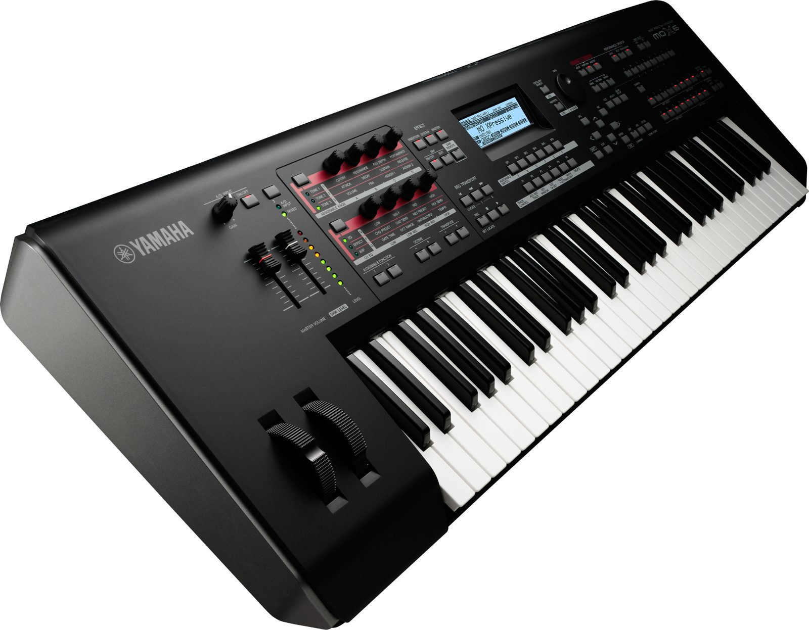

Yamaha PSR-E253 61-Key Portable Keyboard
The PSR-E253 is an ideal first portable keyboard for aspiring musicians who are just starting out.The Yamaha PSR-E253 Portable Keyboard is packed full of great sounds and features, ideal for aspiring musicians who are just starting out. Use the on-board lesson feature, Yamaha Education Suite (Y.E.S.), to learn the 100 preset songs, or take advantage of 385 instrument Voices and 100 Styles to experiment and create your own music. The AUX IN jack turns the PSR-E253 into a speaker system for your MP3 player so you can play along or just listen, all for a very affordable price. The PSR-E253 comes with an adaptor.
Yamaha PSR-E253 Specifications:
o Tone Generation Tone Generating Technology AWM Stereo Sampling
o Polyphony Number of Polyphony: (Max.) 32
o Preset Number of Voices: 372 Voices + 13 drum/SFX kits
o Reverb : Yes
o Chorus : Yes
o Master EQ : Yes
o Ultra-Wide Stereo : Yes
o Functions Panel Sustain : Yes
o Preset Number of Preset Styles :100
o Fingering : Multi
o Style Control : ACMP ON/OFF, SYNC START, START/STOP, INTRO/ENDING/rit, MAIN/AUTO FILL
o Other Features : One Touch Setting (OTS)
o Preset Number of Preset Songs :102
o Recording Number of Songs : 1
o Number of Tracks :1
o Data Capacity : Approx. 300 notes
o Compatible Data Format Recording : Original File Format
o Metronome : Yes
o Tempo Range : 11 - 280
o Transpose : -12 to 0, 0 to +12
o Tuning : 427.0 - 440.0 - 453.0 Hz (approx.0.2Hz increments)
o Duo : Yes
o Miscellaneous PIANO Button : Yes